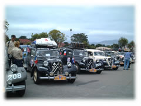
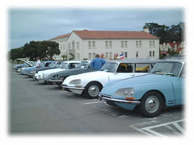
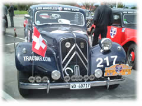
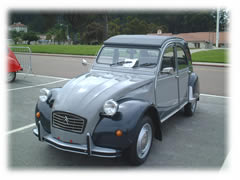

| ..*..*.. 2002年7月23日(火) 晴れ ..*..*..  先週末は、フランスのシトロエンという車のミーティングがあり、サンフランシスコに行ってきました。 これは、35人のシトロエンのオーナーがフランスから車ともども飛行機でロサンジェルスに渡り、それから船でサンフランシスコに来て、これから１ヶ月かけてアメリカ大陸を横断してニューヨークへ車で行くそうです。 各地ではシトロエンファンが出迎えます。アメリカ国内にいるシトロエンのオーナーたちも自分の車でやってきて、100台近くが自分たちの車を展示し、人の車を見たり、お話したり。  実は、先日、夫の買ったマセラッティ Merak '74は、マセラッティがシトロエンSMという車のためにつくったエンジンを積んだ車です。（ギアボックス、ダッシュボード、独特の油圧システムもSMと一緒）それで、私たちもサンフランシスコへ行ってきたわけです。 Websサイトはこちら。こんな人たちがやってきました。リストの右側が、各自の持っている車の製造された年代です。50年代、60年代、30年代に製造されたものもあるんですね。こんな車でみなさん、ニューヨークまで運転するのですよ。本当の車好きですよね。 最初、1ヶ月もかけるなんて、どういう人が来るんだろう？って思ったんだけど、フランス人って毎年、３週間から１ヶ月も夏の休暇をとれるそうです。うらやましい。実際には、定年した人も多く参加していたようです。（あの時代の車なんてみんなマニュアル車だから、そんなに年をとってもマニュアルを運転する人たちなんですよね。すごいなぁ）  夫のマセラッティも、他には誰も乗ってきていなくて、人が集まって、写真を撮っていく人もいました。今回ばかりは、私のミニには誰も集まりませんでした(^^;。（2台で行ってきました） 左下の黒いのは、トラクションアバン。今回一番たくさん乗ってきた人がいた車です。右下の黒とシルバーのツートンのは2CV。面白い形で気に入ってます。 |